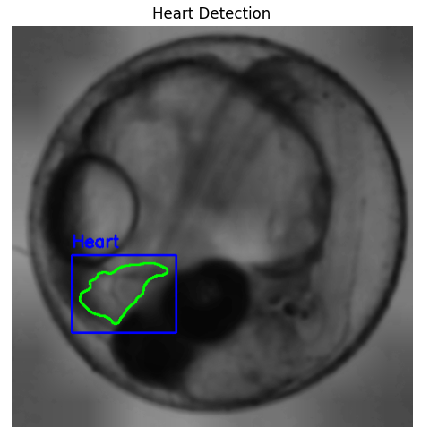

Hi, I am Juan P Alzate.
Data Scientist - Biologist
I started out as a biologist, driven by curiosity about how living systems work. Over time, I realized that the same curiosity also applies to data: asking questions, looking for patterns, and figuring out what’s really going on. That realization led me to earn a Master’s degree in Data Science, where I learned how to combine scientific thinking with data analysis tools. Today, I work with machine learning and deep learning, and I’m especially excited about AI and generative models. I enjoy the full process, from cleaning up messy data to turning it into insights that actually matter.
What you see here is a sample of my work, with more to come. If anything interests you or you’d like to talk, feel free to reach out.
Skills
- Python
- R
- Machine Learning
- Deep Learning
- NLP
- LLM
- AI
- Computer Vision
- Statistics
- Data Visualization
- Power BI
- Tableau
- SQL
- GIS
- Git
Dashboards
Economic Growth and Education in Mortality

Dashboard of economy and education in the 21st century and how these variables interact with mortality.
- Power BI
- Data Analysis
1000 Days of COVID-19 in Colombia

The 1000 days of COVID Dashboard displays the data of the 1000 days after the first covid case was found.
- Tableau
- Data Visualization


Machine Learning and AI Models
Computer Vision for Early Alzheimer's Detection

AI to classify Alzheimer's disease and its severity using MRI brain scans.
- Python
- CNN
- TensorFlow
Optimising Cancer Diagnosis with Gene Expression

Advanced dimensionality reduction and ML techniques to enhance cancer classification accuracy.
- Python
- Machine Learning
- PCA
Computer Vision for Heart Rate Analysis

Computer vision to detect and measure heart rate using video with unlabelled data.
- Python
- Computer Vision
- Signal Processing

Statistical Analysis
International Trade Network Analysis

2021's Global trade network, key players, trade patterns, and the impact of COVID-19.
- R
- Network Analysis
- Statistics

NLP

Visualizations
Adolescent Fertility Rate
Adolescent fertility rate (AFR) measures births to women aged 15-19 years per 1000 individuals.
- Data Viz
- Health Data
Radopholus Boxplot

Radopholus is a genus of plant-parasitic nematodes causing significant economic losses in agriculture.
- R
- ggplot2